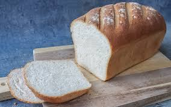

White Bread

Crispy White Bread
Homemade White Bread – Soft, Fluffy, and Perfectly Baked - indulge in the comforting aroma and taste of freshly baked white bread, a timeless classic that brings warmth to any kitchen. Made from simple yet high-quality ingredients, this soft and fluffy loaf boasts a golden-brown crust and a tender, airy interior. Whether enjoyed plain, toasted with butter, or used for making delicious sandwiches, this artisan-style white bread offers the perfect balance of texture and flavor. Baked to perfection and carefully sliced, it’s an ideal addition to your breakfast table or as a complement to soups and spreads. Elevate your home baking experience with this wholesome, homemade delight!
Ingredients
- All-Purpose Flour or Bread Flour – (12 sheets, oven-ready or boiled according to package instructions)
- Ground Beef – (500g / 1 lb, or a mix of beef and Italian sausage)
- Onion – (1 medium, finely chopped)
- Garlic – (3 cloves, minced)
- Olive Oil – (2 tablespoons, for sautéing)
- Tomato Sauce:
- Crushed Tomatoes – (500g / 4 cups, for structure and texture)
- Warm Water – (300ml / 1¼ cups, at about 38°C or 100°F)
- Active Dry Yeast – (7g / 2¼ teaspoons, for leavening)
- Sugar – (25g / 2 tablespoons, to activate the yeast and enhance flavor)
- Salt – (10g / 1½ teaspoons, for flavor and gluten strength)
- Unsalted Butter or Oil – (30g / 2 tablespoons, for moisture and tenderness)
- Additional Tools:
- Mixing Bowl – To combine ingredients and knead the dough
- Wooden Spoon or Dough Hook – For mixing the dough
- Stand Mixer(Optional) – For kneading if preferred
- Clean Kitchen Towel or Plastic Wrap – To cover the dough while rising
- Loaf Pan – 9x5-inch for shaping and baking
- Oven – Preheated to 190°C (375°F)
Steps
- Activate the Yeast (5-10 minutes)
- In a mixing bowl, combine warm water, sugar, and yeast.
- Stir gently and let it sit for 5-10 minutes until foamy (this means the yeast is active).
- Mix the Dough (5-10 minutes)
- Add flour and salt to the yeast mixture.
- Mix with a wooden spoon or stand mixer until it starts forming a rough dough.
- Add melted butter or oil and continue mixing until combined.
- Knead the Dough (10 minutes)
- Transfer the dough to a lightly floured surface.
- Knead by hand for 8-10 minutes, or use a stand mixer with a dough hook for 5-7 minutes.
- The dough should be smooth, elastic, and slightly tacky but not sticky.
- First Rise (60-90 minutes)
- Place the dough in a lightly greased mixing bowl and cover with a clean kitchen towel.
- Let it rise in a warm place for 60-90 minutes, or until doubled in size.
- Shape the Dough (5 minutes)
- Punch down the dough to release excess air.
- Shape it into a log and place it into a greased loaf pan.
- Second Rise (30-45 minutes)
- Cover the loaf with a towel or plastic wrap and let it rise again for 30-45 minutes, until puffy.
- Bake the Bread (30-35 minutes)
- Preheat the oven to 190°C (375°F).
- Place the loaf pan in the oven and bake for 30-35 minutes, until golden brown.
- The bread is done when it sounds hollow when tapped on the bottom.
- Cool and Serve (15-20 minutes)
- Remove the bread from the oven and let it cool in the pan for5 minutes.
- Transfer to a wire rack to cool completely before slicing.